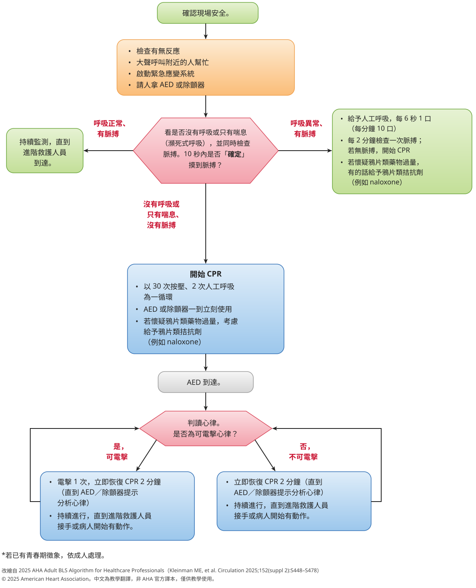
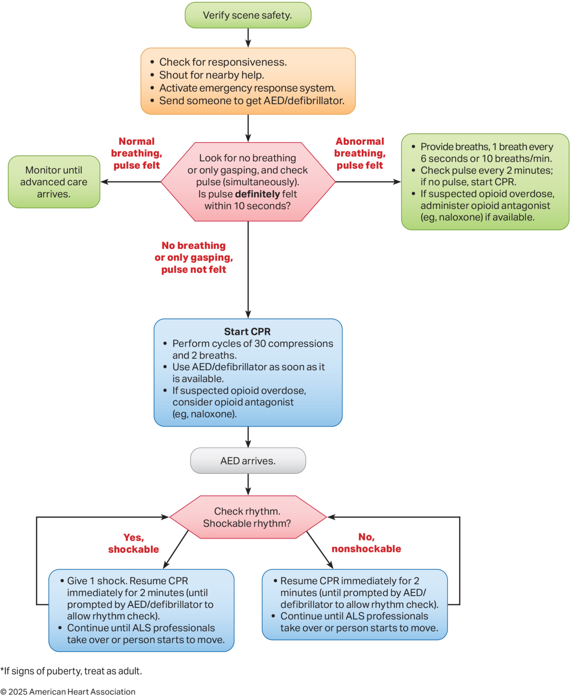
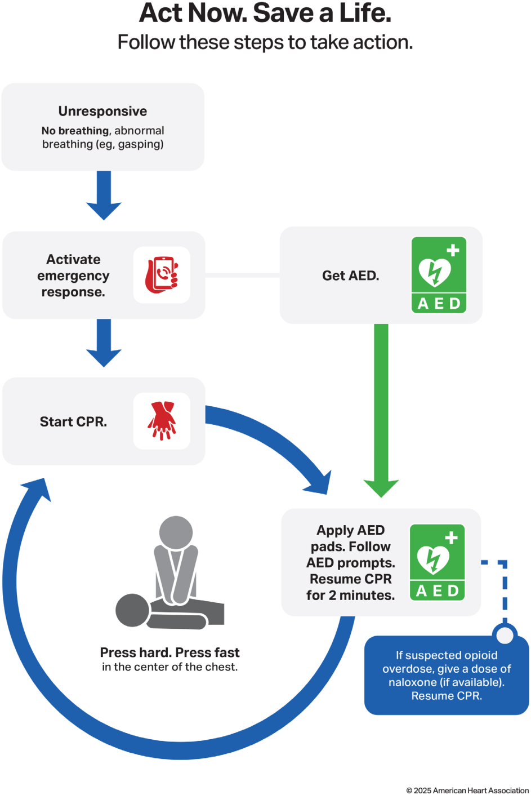
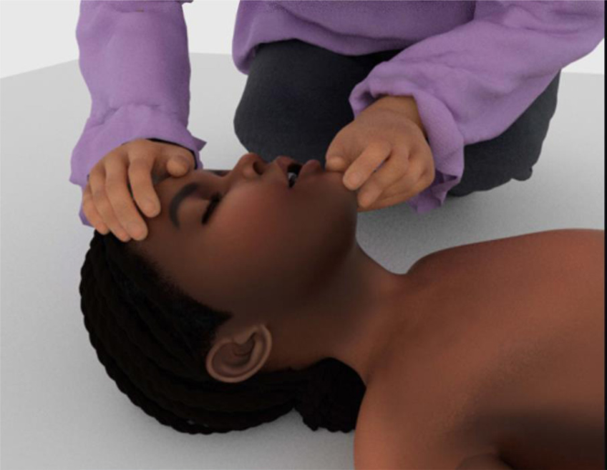
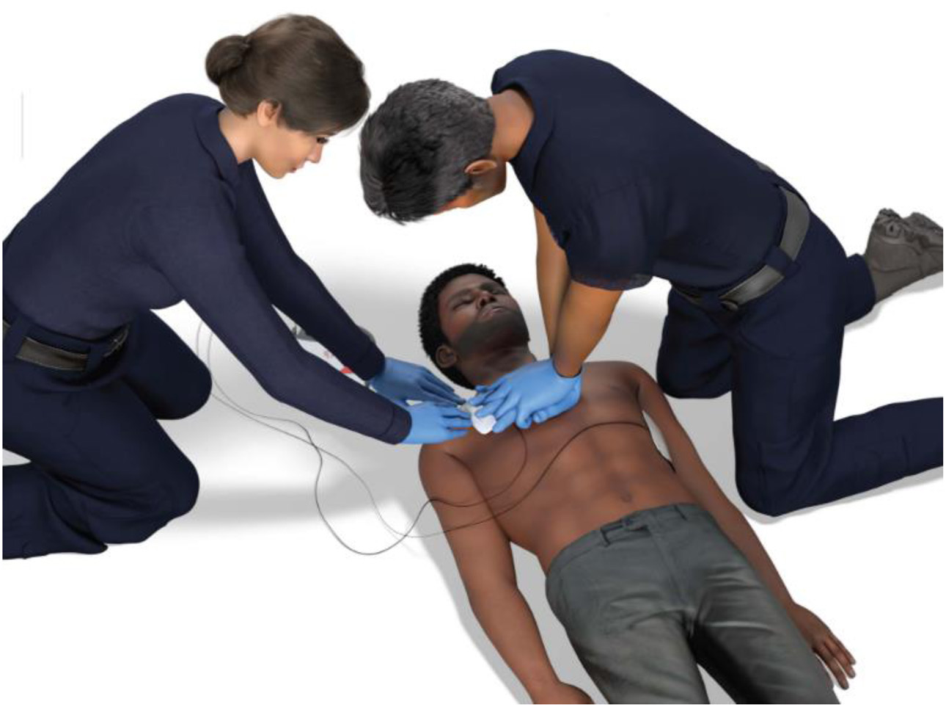
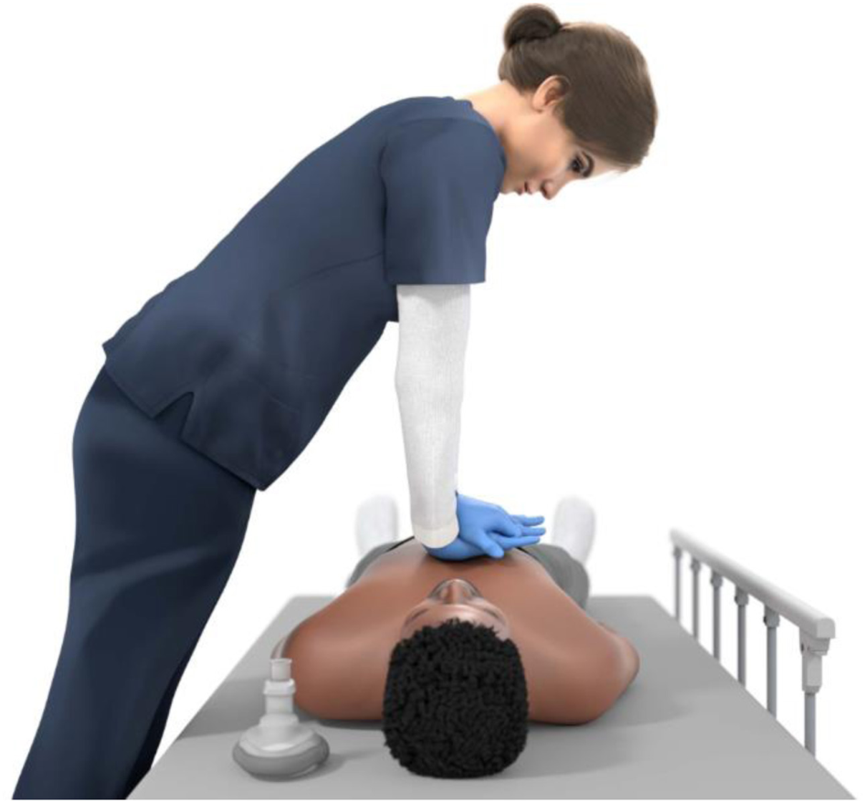
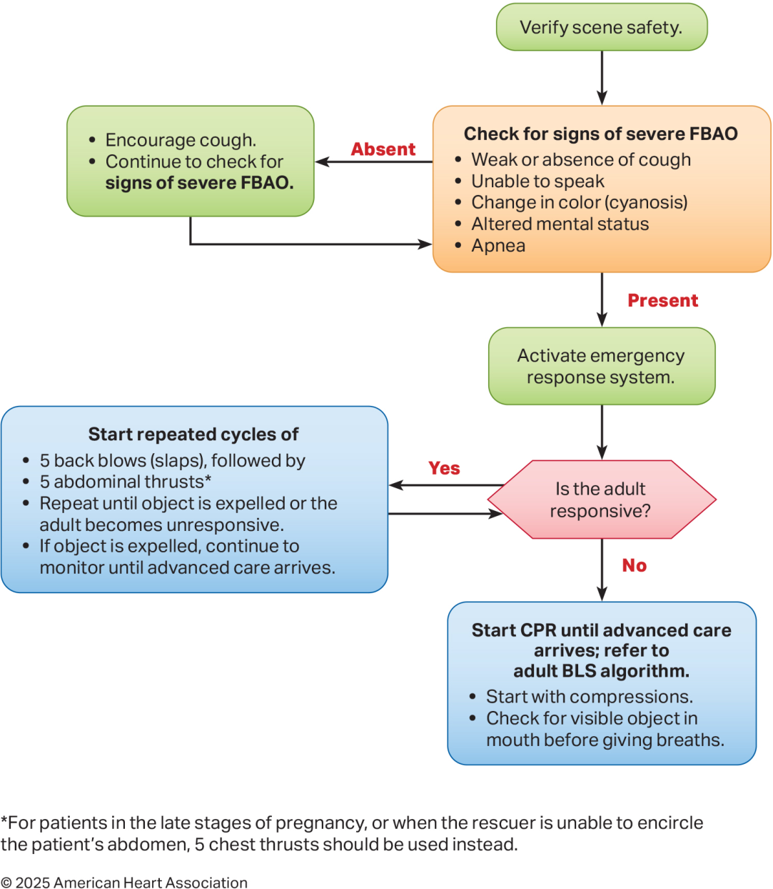
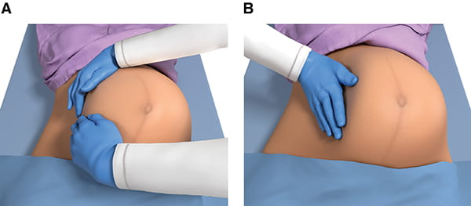

摸得到脈搏，才叫專業人員版
一般民眾版的 CPR 只看「叫不醒、沒有正常呼吸」。專業人員多了三件事：10 秒內同時摸脈搏、會用甦醒球把氣給進去、懂得在團隊裡把按壓中斷壓到最短。今天再加上哽塞，以及三個會讓標準流程「轉彎」的情境：創傷、溺水、孕婦。
v4.6 全面以 AHA 為主（2026-11-11）：AHA 和 ERC 說法不同時，主文與課堂建議一律照 AHA 的條文與 COR/LOE；ERC 降成灰色小字「ERC 參考」，不是本課建議。AHA 沒寫的地方標 AHA 未提及。
「支持文字」＝出自指引 recommendation-specific supportive text 或 synopsis，本身沒有 COR/LOE；「課堂慣例」＝教學習慣或解剖常識，不是指引條文；「待查證」＝我查不到原文，不要當作定論。按右上角「原文」可以在每條建議下顯示英文原句。
主要來源：Kleinman ME, et al. Part 7: Adult Basic Life Support. Circulation. 2025;152(suppl 2):S448–S478. doi:10.1161/CIR.0000000000001369
Cao D, et al. Part 10: Adult and Pediatric Special Circumstances of Resuscitation. Circulation. 2025;152(suppl 2):S578–S672. doi:10.1161/CIR.0000000000001380
Joyner BL Jr, et al. Part 6: Pediatric Basic Life Support. Circulation. 2025;152(suppl 2):S424–S447. doi:10.1161/CIR.0000000000001370・其餘見第 08 節。
125 分鐘怎麼排
三段 65＋20＋40＝125 分鐘。各段內部的細分是建議的分配，標了 建議。
一、叫叫 CABD（專業人員版）
- 0–8檢查呼吸＋脈搏：頸動脈位置、10 秒同時看＋摸 → 躺下互練
- 8–16暢通呼吸道：壓額抬下巴、推下顎、疑頸椎怎麼辦
- 16–28甦醒球 BVM：E-C 手勢、看胸部起伏、單人 vs 雙人
- 28–38全流程：呼吸脈搏 → 呼吸道／口中可見異物 → 30:2
- 38–55高品質 CPR 團隊、CCF、換手、搬運毯任務
- 55–60有脈搏沒正常呼吸（rescue breathing）、鴉片類
- 60–65交接：影響預後的資訊、IMIST-AMBO 30 秒交班
二、Choking（成人為主，附兒童／嬰兒差異）
- 65–70輕度 vs 嚴重阻塞怎麼分
- 70–805 背擊 → 5 腹戳 循環互練；孕婦／抱不住改胸戳
- 80–85倒下轉 CPR：先壓胸、開口看得到才拿、不盲掏；兒童／嬰兒差異
三、特殊情境
- 85–98創傷性心跳停止：可逆原因優先、什麼時候壓胸幫助有限
- 98–110溺水：缺氧型心跳停止、通氣優先、先 CPR 再 AED
- 110–125孕婦 OHCA：左推子宮、呼吸道優先、照常電擊、5 分鐘 resuscitative delivery
5.1–5.3 各附「藥物與電擊」補充；5.4 鴉片類、5.5 過敏性休克、5.6 觸電、5.7 不能取代 AED 的手法為延伸・備課用，不佔上面 40 分鐘。v4.5
2025 改了什麼（跟 2020 版比）
這裡只列 AHA 官方《2025 Highlights》明確標示 New 或 Updated、而且跟今天課程有關的項目。標「重點」的是 Highlights 列為 key issue、但沒有標 New／Updated 的。
- Updated 成人嚴重異物哽塞：改成 5 次背擊 → 5 次腹戳 反覆循環，直到異物排出或失去反應。1 B-NR 並新增成人 FBAO 演算法。
- Updated 頭頸創傷：推下顎＋呼吸道輔助器還是打不開，就改用壓額抬下巴。1 C-EO
- Updated 通氣量：給到「看得到胸部起伏」就好 2a C-LD；通氣太少或太多都要避免 3: Harm C-LD。
- Updated 放進階呼吸道前，民眾與醫護都做 30:2。2a B-NR 理由：30:2 才看得到胸部有沒有起伏。
- Updated 機械式 CPR 不建議常規使用 3: No Benefit B-R；New 但在徒手 CPR 困難或危險的特定情境（例如運送中）可考慮 2b C-LD。
- New 貼 AED 貼片可以調整胸罩位置，不一定要脫掉。2b C-EO
- New 肥胖病人 CPR 技術跟一般人一樣。1 C-LD
- 演算法 醫護版成人 BLS 演算法加入鴉片類拮抗劑（呼吸停止與心跳停止兩條路都有）。
- Updated 兒童嚴重哽塞改成先背擊（5 背擊＋5 腹戳）；嬰兒改用單手掌根胸戳（5 背擊＋5 胸戳）。
- Updated 孕婦：perimortem cesarean delivery 改稱 resuscitative delivery；一確認心跳停止就開始準備，目標 5 分鐘內完成。1 B-NR
- New 疑似鴉片類過量的心跳停止，可以給拮抗劑，但不能干擾高品質 CPR 2b B-NR；鴉片過量病人出院時要給 naloxone 並衛教 1 C-LD。
- New（Part 4 系統照護）OHCA 多數應優先在現場復甦到持續 ROSC 再運送 2a B-NR；院內急救小組要有明確分工 2a B-NR。
- 重點 病人軀幹高度大約在施救者膝蓋的位置來壓胸 1 B-NR；一般在發現病人的地方就地急救 1 C-EO。
來源：AHA. Highlights of the 2025 AHA Guidelines for CPR and ECC（PDF）；COR/LOE 對回 Part 4／6／7／10 建議表。
叫叫 CABD：專業人員版
65 min
🔍 點圖放大（開新分頁看原尺寸）
看英文原圖

Figure 1. Adult BLS Algorithm for Health Care Professionals. © 2025 American Heart Association，僅供教學使用。出自 Part 7。
3.1 檢查呼吸、檢查脈搏 0–8′
3.1.1 專業人員版 vs 民眾版：差在哪 3.1 開場對照
| 步驟 | 民眾版（Figure 2） | 專業人員版（Figure 1） |
|---|---|---|
| 叫：判斷意識 | 先確認現場安全，再看有沒有反應、有沒有正常呼吸（無呼吸或只有喘息） | 同左（確認現場安全 → 檢查反應） |
| 叫：求救 | 打電話啟動緊急應變（手機擴音，邊講邊壓；1 C-LD），拿 AED | 呼叫附近幫手＋啟動緊急應變系統（院內 code）＋派人拿 AED／除顫器 |
| 判斷心跳停止 | 不摸脈搏：無反應＋沒呼吸／只有喘息就當作心跳停止（1 C-LD） | 看呼吸同時摸脈搏，≤10 秒；沒「確定」摸到才當心跳停止（1 C-LD） |
| 有脈搏但呼吸異常 | 無此分支 | 只給人工呼吸：每 6 秒 1 口（10 次/分），每 2 分鐘再摸脈搏 |
| C 壓胸 | 用力壓、快快壓、壓胸部正中；所有民眾都應壓胸（1 B-NR） | 同，並負責高品質 CPR 指標與 CCF |
| A 呼吸道 | 流程圖未列；受過訓者可壓額抬下巴（1 C-EO） | 壓額抬下巴；疑頭頸外傷用推下顎、不後仰（1 C-EO）；可考慮口咽／鼻咽呼吸道 |
| B 人工呼吸 | 沒受訓：只壓胸；受過訓：可加人工呼吸（2a B-R） | 一律 30:2；口對口、口對面罩或甦醒球皆可（2a C-LD） |
| D AED | 貼片、照語音，恢復 CPR 2 分鐘 | 判讀心律→可電擊電 1 次；電完或不電都立即恢復 CPR 2 分鐘 |
| 再檢查 | 不摸脈搏，一直壓到有人接手 | 換手／判讀心律時摸脈搏 ≤10 秒，沒摸到立即再壓（1 C-LD） |
| 鴉片類過量 | 有 naloxone 就給一劑，繼續 CPR | 呼吸停止（有脈搏）有就給拮抗劑；心跳停止時考慮給 |
| 何時停 | 流程圖未寫 | 直到進階救護接手或病人開始動 |
總結：民眾版只看「有沒有反應、有沒有正常呼吸」，看到就壓；專業人員版多了「10 秒內摸脈搏」與「有脈搏沒正常呼吸→只給呼吸」這一支，人工呼吸從選配變成固定 30:2。
註：「叫叫CABD」為課堂口訣，AHA 流程圖不用此字樣。課堂慣例
出處：AHA 2025 Part 7 Adult BLS https://cpr.heart.org/en/resuscitation-science/cpr-and-ecc-guidelines/adult-basic-life-support
看民眾版原圖

Figure 2. Adult BLS Algorithm for Lay Rescuers. © 2025 AHA，僅供教學使用。出自 Part 7。
3.1 本節：呼吸與脈搏怎麼判斷、怎麼練
指引說
- 演算法寫的是「看有沒有呼吸或只有喘息，同時摸脈搏（simultaneously）」。演算法
- 醫護人員常常摸太久、也常判斷錯；沒有證據顯示看呼吸、咳嗽、動作比摸脈搏更準。支持文字
- 瀕死呼吸（agonal breathing）在 OHCA 出現率可達 40%–60%，是民眾誤判「還有呼吸」的常見原因。支持文字
- 對「沒有心跳停止的昏迷病人」壓胸，造成傷害的風險低；該壓沒壓的代價遠比較大。支持文字
課堂怎麼教
頸動脈在哪裡 課堂慣例／解剖：手指先找到喉結（甲狀軟骨），往施救者這一側滑進氣管與胸鎖乳突肌之間的凹溝，用 2–3 指輕摸；只摸一側。Part 7 沒有描述摸法，這段是解剖與教學習慣。
常見錯誤 課堂慣例：先看呼吸 10 秒、再摸脈 10 秒，變成 20 秒；用大拇指摸（摸到自己的脈搏）；兩側一起壓。
3.2 暢通呼吸道：壓額抬下巴、推下顎 8–16′
指引說
為什麼頸椎傷也可以後仰？「呼吸道暢通的重要性，大於進一步脊髓傷害的風險」。支持文字
課堂怎麼教

OPA 尺寸：嘴角量到耳垂或下顎角 課堂慣例（Part 7 沒寫量法）。
3.3 甦醒球 BVM：E-C 手勢、通氣量、單人 vs 雙人 16–28′
指引說
- E-C 手勢：拇指與食指圍成 C 壓住面罩，其餘三指排成 E 勾住下顎骨下緣往上抬。單人用 BVM 時只能用單手法。支持文字
- 雙手法＋推下顎優於單手 E-C。單人時可改用雙手口對面罩。支持文字
- 能看到胸部起伏的潮氣量，在一項插管成人研究約 362–406 mL（平均成人約 5–7 mL/kg）。支持文字
- 用兒童尺寸的球漏氣多、量不足；成人尺寸的球與較高 ROSC 有關。支持文字
- ROC 資料：30:2 的停頓中，有效通氣不到一半；有效通氣比例低的病人，ROSC 與存活都較差。支持文字
- 過度通氣會造成胃脹、嘔吐吸入、心輸出量下降。支持文字
課堂怎麼教
接氧氣、氧氣流量、PEEP 閥：Part 7 沒有給 BLS 層級的具體數字，這堂課不教數字。待查證：若要教氧氣流量需另找來源
3.4 全流程：呼吸脈搏 → 呼吸道／口中異物 → 30:2 28–38′
點每一格看依據。列印時會自動全部展開。
演算法第一格。演算法
Check for responsiveness・Shout for nearby help・Activate emergency response system・Send someone to get AED/defibrillator。演算法
一個人時：先啟動急救系統，再立刻開始 CPR 1 B-NR；有手機就開擴音同時做 1 C-LD。（這兩條在 Part 7 的民眾段落，Top 10 #2 寫的是 lone responder。）
沒有確定摸到脈搏就當心跳停止 1 C-LD。見 3.1。
Monitor until advanced care arrives。演算法
沒脈搏就開始 CPR；疑鴉片類給拮抗劑（如 naloxone）。見 3.6。演算法
單人醫護人員從壓胸開始 1 C-LD；不論心因性或非心因性，都做壓胸＋通氣 2a C-LD。
深度至少 5 cm、避免超過 6 cm 1 B-NR；速率 100–120／分 2a B-NR；完全回彈、不要靠在胸口 2a C-LD；壓與放時間約相等 2b C-EO。
手放胸部中央（胸骨下半到下三分之一）1 C-LD；可考慮慣用手貼胸骨 2b C-LD；軀幹高度約在施救者膝蓋 1 B-NR；硬的平面、仰躺 2a C-LD；即時回饋裝置 2a B-R。
俯臥時心跳停止：可以的話翻成仰躺再壓；不能安全翻身時，可考慮直接俯臥 CPR 2b C-LD。
壓額抬下巴／推下顎見 3.2。異物哽塞病人在 CPR 中，打開呼吸道時移除看得到的異物 1 C-EO；不要盲目用手指掏 3: Harm C-LD。
停下來給 2 口、每口 1 秒 2a C-LD；放進階呼吸道前做 30:2 2a B-NR；沒有進階呼吸道時，醫護人員可考慮持續壓胸＋非同步通氣 2b C-LD，但這樣看不到胸部起伏。
AED 貼上前持續 CPR 1 C-LD；沒監測的心跳停止，準備電擊器時先做一小段 CPR 2a B-R；目擊或監測中的 VF/pVT 且電擊器在手邊，立刻電 2a C-LD；電擊後直接壓、不要先看節律 2a B-R。


3.5 高品質 CPR 團隊與 CCF：換手、少停、搬運 38–55′
指引說
- 壓胸深度在 90–120 秒後開始變淺；每 2 分鐘換手剛好配合節律分析的停頓。支持文字
- 邊運送邊 CPR 會降低 CPR 品質，並增加病人與救護人員的安全風險；ROC 資料中，運送中急救沒有提高存活。Part 4 支持文字
- 移動擔架上跪姿或跨坐壓胸可改善深度，但要權衡施救者安全與穩定。Part 7 支持文字
- 單人可從病人頭頂方向壓（over-the-head CPR），適用狹窄空間等情況。Part 7 表格標 2a C-LD，但句子用的是「may be considered」（通常是 2b 的用語）。待查證：COR 與措辭不一致
- 創傷造成的循環停止等情況，現場停留的效益較低，個案判斷。Part 4 synopsis
課堂怎麼教
院內推床到 CT／導管室途中怎麼壓：Part 7 沒有專門條文，只有「就地急救」與移動擔架上壓胸的支持文字。院內搬運 CPR 無專門條文
3.5.1 指引怎麼說團隊合作 CPR 團隊 5′ 講解用
四項名稱與英文出自 Part 12 §6.4 Synopsis；每格的中文說明與搬運毯舉例是課堂詮釋 課堂慣例
下面每條都附英文原句（不用按「原文」也會顯示）、COR/LOE 或 ILCOR 強度、出處連結，以及「課堂怎麼用」一句。課堂怎麼用為建議 建議。
AHA 2025 Part 12 Resuscitation Education Science
AHA 2025 Part 4 Systems of Care
Part 4 §15 #2（明確分工、多元專業、含模擬的訓練，2a B-NR）已列在上方 3.5「指引說」，不重複。
AHA 2025 Part 10 Special Circumstances（跟團隊直接相關的條文）
Part 7（成人 BLS）與 Part 9（成人 ALS）的建議表沒有直接講團隊合作的條文；Part 7 跟團隊最接近的是「每 2 分鐘換手」（2a B-R，已列在 3.5）。
補充：ILCOR 2025 Education, Implementation, and Teams CoSTR（GRADE 強度，不是 COR/LOE）
ILCOR 原文頁面沒有分節錨點，連結到全文；請以章節名稱與 EIT 編號搜尋。ILCOR 另提到 CPR Coach「may be considered a specific way of using shared leadership in resuscitation teams」ILCOR 理由說明，非建議。
3.5.2 ACLS Provider Manual 2025 Part 3：高效能團隊 1-6a／1-6b／1-7 備課用
一、高效能團隊顧四件事（Figure 35，p95–96）
注意：這四項是教科書的「團隊焦點」框架，和 3.5.1 的 Part 12 §6.4 四大團隊能力（溝通／領導／決策／工作量分配）不是同一組，上課不要混講。ACLS PM 2025 Part 3
- CCF：書中寫理想上 > 80%，並註明高效能系統以至少 60% 為目標、理想常以 > 80% 為目標。指引條文只有「至少 60%」（3.5，2b C-LD）。ACLS PM 2025 Part 3・p95
- 書中「提高 CCF 的方法」框（p96）適合 BLS 課堂的有：壓胸者手懸在胸口上方等著、下一位壓胸者先就位。其他幾項（分析前先充電、充電時先摸脈、不停壓插管、壓胸中給藥、BVM 持續壓胸＋非同步通氣）屬 ALS／手動去顫器情境。ACLS PM 2025 Part 3・p96
二、角色分工：六人站位與復甦三角（Figure 36，p98）
| 角色 | 站哪裡 | 做什麼（中文改寫） | 本課程對應 |
|---|---|---|---|
| Compressor 壓胸者 | 病人右側 | 評估病人、壓胸；每 2 分鐘（累了提早）和 AED／監視器那位輪替 | 壓胸 A／B |
| Monitor/Defibrillator/ CPR Coach | 病人左側 | 帶來並操作 AED／去顫器，被指派時兼 CPR Coach；和壓胸者輪替；螢幕擺在隊長看得到的地方 | AED（＋計時） |
| Airway 呼吸道 | 病人頭端 | 打開呼吸道、BVM 通氣、放呼吸道輔助器 | BVM |
| Team Leader 隊長 | 病人右腳端（可走動） | 指派角色、做決策、給回饋、承接沒人負責的事；每個團隊都要有明確隊長 | Leader |
| IV/IO/Medications | 病人左腳端 | ALS 人員：建立 IV/IO、給藥 | BLS 課程無此角色（1-6b 改成「鋪毯」） |
| Timer/Recorder 計時記錄 | 病人右肩附近 | 記錄處置與給藥時間、預告下一次何時該做、記錄壓胸中斷次數與秒數，回報隊長 | 計時（1-6b 與 AED 同一人兼任） |
復甦三角Resuscitation Triangle
壓胸者、AED／監視器（兼 CPR Coach）、呼吸道三人圍著病人。書中說「團隊擁有這場急救」，除了保護自身安全，沒有人離開三角。Figure 36 長描述人不夠 6 個時Fewer than 6
隊長要把任務排優先順序，再分給在場的人。p99CPR Coachp98–99
可獨立，或併入 AED／監視器那位；站在去顫器旁看得到壓胸者。報出開始 CPR、回饋深度／速率／回彈與通氣、講中間值目標（例：直接說 110/min）、主導每一次停頓。p98–99隊長要做的事Team Leader Role・p97–98
- 組織團隊、看每個人的表現、必要時補位
- 顧整體病人照護（成員顧自己那一格）
- 承接沒被指派的角色；想好下一步、確認沒漏
- 定期做團隊總結、徵詢大家意見
- 避免固著錯誤（fixation errors）
- 要做進階處置時，暫時把隊長交給別人
- 急救後帶大家分析、debrief、為下次練習
成員要做到Team Member Roles・p98
- 在自己執業範圍內技術熟練
- 清楚自己被分到什麼、準備好去做
- 常練、熟悉演算法
- 投入、想把人救回來（committed to success）
角色不清的三個徵兆Clear Roles・p100
- 同一件事被做兩次
- 該做的事被漏掉
- 明明還有人手，卻讓某人一人多職
三、團隊動態八元素（p99–103，Table 13–20）
書中把團隊動態分三大類：角色（Roles）、講什麼（What to Communicate）、怎麼講（How to Communicate），每個元素都有一張「隊長／成員各做什麼」的表。以下為中文改寫重點。ACLS PM 2025 Part 3
| 元素 | 隊長 | 成員 |
|---|---|---|
| 角色 Roles | ||
| 清楚分工 Clear Roles and Responsibilities・T13 | 定義每個人的角色；依專長與可用人力平均分配 | 找自己能力內的事做；做完告訴隊長；超出能力就說、要求換；主動補位 |
| 知道自己的極限 Knowing Your Limitations・T14 | 全員：早點求援，不要等病人更糟；處置無效時請教更有經驗的人；急救中不要嘗試沒做過的技術。書中強調求助不是軟弱，人手寧多勿少。 | |
| 建設性介入 Constructive Interventions・T15 | 指示改做優先度更高的處置；把超出能力的人換任務；當場避免衝突，事後再 debrief | 有把握地提出替代方案；同事要出錯時提出質疑、及時阻止 |
| 講什麼 What to Communicate | ||
| 知識分享 Knowledge Sharing・T16 | 鼓勵分享；主動問「還有什麼診斷、漏了什麼處置」；小心固著錯誤（「一切都 OK」「只有這條路」「什麼都好就是不要這個」） | 彼此分享病人變化；接受能讓自己做得更好的資訊 |
| 總結與再評估 Summarizing and Reevaluating・T17 | 定期講出現況與接下來幾步，讓全隊有共享心智模型（shared mental model）；有新資訊就改策略；向新到的人說明現況；可請計時記錄提供摘要 | 病人明顯變化時要說出來 |
| 怎麼講 How to Communicate | ||
| 閉環溝通 Closed-Loop Communications・T18 | 三步：①對特定人下指令 ②要求清楚回應＋眼神接觸 ③確認做完，才派下一件 | 開始或完成時回報（例：「IV 打上了」）；給藥前先口頭和隊長確認 |
| 清楚訊息 Clear Messages・T19 | 鼓勵大家講清楚、講完整句子 | 全員：複誦指令，有一點疑問就問；不含糊、不吼叫；一次只有一個人說話 |
| 相互尊重 Mutual Respect・T20 | 做得對就給正向回饋（「謝謝，做得好！」） | 全員：放下自我、專心聽、語氣友善受控、不表現攻擊性；不要把「下指令」誤當成「兇」 |
書中對清楚訊息的形容：“The most effective teams are usually quiet, calm, and focused on a common goal—not noisy or upset.”（p103）ACLS PM 2025 Part 3
四、CCF 怎麼量、debriefing 與系統（同書其他段落）
- 兩個碼錶手算 CCF：一個計急救總時間（開始到結束或 ROSC），一個只在有壓胸時走、停壓就暫停；CCF＝壓胸時間 ÷ 總時間。也可用回饋裝置或 app。ACLS PM 2025 Part 3・p122
- CPR 品質要用影音回饋裝置即時量測；隊長分派角色、安排處置以減少中斷。ACLS PM 2025 Part 3・p121
- Debriefing：書中沒有獨立的 debriefing 小節，也沒有提供 debriefing 腳本或框架。相關內容是：隊長急救後帶大家分析、debrief（p97）；建設性介入當場不衝突、事後 debrief（p101）；Part 1 說每次急救後都該找時間 debrief，立即或稍後皆可（p6），並說事件後對施救者做 debriefing、轉介情緒支持可能有益（p9）。ACLS PM 2025 Part 1／3
- Systems of Care 在 Part 1（p7–10），不在 Part 3：結構＋過程 → 系統 → 結果，放在 CQI 框架下（Figure 1）；CQI 循環＝系統性評估照護與結果 → 建立基準 → 針對缺口改善；量測、跟過去與外部比較（例：CARES、GWTG-Resuscitation 登錄）、找改善點。ACLS PM 2025 Part 1
五、跟指引條文（3.5／3.5.1）怎麼對
| 關係 | 內容 |
|---|---|
| 一致 | 團隊能力要教（Part 12 §6.4 1 B-R）；明確分工（Part 4 §15 #2、§14 #2 2a B-NR）↔ 書中六角色與清楚分工；debriefing（Part 4 §13 #1、#4）↔ 書中「每次急救後立即或稍後 debrief」；量化資料（Part 4 §13 #2）↔ 碼錶算 CCF、回饋裝置；每 2 分鐘換手（Part 7 2a B-R）、CCF ≥60%（Part 7 2b C-LD）兩邊一致。 |
| 書中補充 | 六角色站位與復甦三角、隊長職責清單、八元素的隊長／成員分工、固著錯誤、CPR Coach 的具體動作與「講中間值」、兩碼錶手算 CCF。 |
| 要小心 |
① CPR Coach 強度：書中語氣偏肯定（說研究顯示品質較好、應併入 Monitor/Defibrillator 角色），但 ILCOR EIT 6314 是弱建議、非常低確定性，只說人力足夠時考慮；書中引的研究是兒科模擬試驗。→ 上課用「可以考慮」的強度。 ② CCF > 80%：書中寫成「理想目標」，指引條文只有 ≥60%；> 80% 是支持文字，不是條文。 ③ BVM 持續壓胸＋非同步通氣：書中列為提高 CCF 的選項；本課程教 30:2，指引頁未收這條。待查證：需回 Part 7／9 原文核對 ④ Huddle：書中沒有這個詞；書的對應概念是「總結與再評估、共享心智模型」。Part 4 的 safety huddle 是心跳停止前的預防，三者不同。 ⑤ Part 10 §14 #6「隊長控制室內人數」（1 C-EO）在書 Part 3 團隊章沒有對應段落。 |
3.6 有脈搏、沒有正常呼吸（rescue breathing）＋鴉片類中毒 55–60′
指引說
- 演算法：每 6 秒 1 口、每 2 分鐘摸一次脈，沒脈搏就開始 CPR。演算法
- 有脈搏的人呼吸停止約 90 秒，血氧就可能掉到危險程度。支持文字
- 拮抗劑經鼻或肌肉注射可能要幾分鐘、甚至重複給藥；非鴉片類鎮靜藥不會被逆轉；拮抗劑不會逆轉 VF。支持文字
- 一項研究中，低劑量 IV naloxone 滴定治療後 72% 再出現呼吸抑制。支持文字
劑量：Part 10 Table 4 有成人與兒童劑量，本頁不列劑量，用藥依各院醫囑。劑量未摘錄
課堂怎麼教
重點只有一句：先把氣給進去，藥是加分。拮抗劑醒來後還要觀察，因為鴉片類作用可能比拮抗劑長。
3.7 交接：影響預後的因素、交接要講什麼 60–65′
指引說（影響預後的因素）
- 早期高品質 CPR 與及早電擊是與預後改善最相關的處置。Part 7 Preamble
- ARREST 登錄：目擊 VF，6 分鐘內第一次電擊成功率 93%，延到 16 分鐘以上降到 75%；第一次電擊每晚 1 分鐘，存活出院機率降低 6%。Part 7 支持文字
- CCF 越高與存活改善相關；電擊前後停頓越短 ROSC 越好。Part 7 支持文字
- 30:2 停頓中有效通氣超過一半的病人，ROSC、存活、神經預後都較好。Part 7 支持文字
- 延遲開始壓胸與較差預後有關（一項電話指導 CPR 研究中，41% 因為搬動病人而延遲）。Part 7 支持文字
課堂怎麼教（非 AHA 格式）
IMIST-AMBO Iedema 2012；Shah 2016：救護→急診交班用的結構。
| I | Identification：病人是誰（年齡、性別）、發生時間 |
| M | Mechanism／Medical complaint：機轉或主訴 |
| I | Injuries／Information：相關傷勢或資訊 |
| S | Signs：生命徵象、GCS |
| T | Treatment & trends：給了什麼、反應如何 |
| A M B O | Allergies・Medications・Background・Other |
院內醫護之間常用 SBAR（Situation, Background, Assessment, Recommendation）AHRQ TeamSTEPPS。
心跳停止交班要塞進 T 的東西 對應上面預後因子，課堂建議：倒下時間、有沒有目擊、旁觀者 CPR 多久後開始、第一次電擊時間與總次數、初始節律、通氣方式（BVM／進階呼吸道）、給過的藥（含 naloxone）、ROSC 時間。
Choking：成人異物哽塞（附兒童、嬰兒差異）
20 min指引說
- 嚴重阻塞的徵象：咳嗽微弱或咳不出、講不出話、發紺、意識改變、呼吸停止。FBAO 演算法
- 為什麼先背擊：709 人的世代研究中，背擊的解除率較高、傷害較少；腹戳有主動脈剝離、胃破裂等致命個案報告。5＋5 交替也是為了跟兒童、嬰兒一致。支持文字
- 失去意識後，壓胸本身產生的氣道壓力可能把異物推出；有沒有脈搏都直接 CPR。支持文字
- 異物排出後仍要持續監測到進階照護接手。FBAO 演算法
課堂怎麼教

| 成人 | 兒童（1 歲到青春期） | 嬰兒（未滿 1 歲） | |
|---|---|---|---|
| 清醒、嚴重阻塞 | 5 背擊 → 5 腹戳 1 B-NR | 5 背擊 → 5 腹戳 1 C-LD | 5 背擊 → 5 胸戳 1 C-LD |
| 腹戳 | 可以（孕婦後期、抱不住改胸戳） | 可以 | 不做（可能傷腹部器官）支持文字 |
| 胸戳手法 | — | — | 單手掌根（取代舊的兩指法）Updated |
| 失去反應 | CPR，從壓胸開始 1 C-LD | CPR，從壓胸開始，不用摸脈搏 1 C-LD | |
| 看得到的異物 | 拿掉 1 C-EO | 拿掉 1 C-LD | |
| 盲目手指掏 | 不要 3: Harm C-LD | 不要 3: Harm C-LD | |
特殊情境：標準流程什麼時候要轉彎
40 min5.1 創傷性心跳停止（TCA） 85–98′
| 主題 | AHA 2025（本課依據） |
|---|---|
| 有沒有專節 | AHA 未提及AHA 2025 無專節。Part 7、Part 9、Part 10 都沒有創傷性心跳停止的章節或演算法；只有散在各章的相關條文與支持文字（見下）。ERC 參考：有創傷專節與 TCA 演算法（Fig. 8）。 |
| 壓胸 vs 可逆原因 | AHA 未提及沒有針對創傷改變順序的條文。BLS 照 Part 7 一般流程：沒確定摸到脈搏就開始 CPR 1 C-LD。ERC 參考：主張止血、呼吸道、胸部減壓等可逆原因同時處理，且優先於壓胸。 |
| 止血 | AHA 未提及AHA 2025 復甦指引的建議表沒有 TCA 止血條文。止血見 AHA First Aid 指引，本頁未查ERC 參考：可壓迫的外出血用抬高、直接或間接加壓、加壓敷料、止血帶、局部止血劑。 |
| 呼吸道 | 頭頸創傷用推下顎、不要後仰 1 C-EO；推下顎＋輔助器仍打不開就改壓額抬下巴 1 C-EO；民眾不要用硬式頸圈 3: Harm C-LD。 Part 7・Opening the Airway After Head and Neck TraumaIn cases of head and neck trauma, trained rescuers should open the airway of an adult by using a jaw thrust without head extension.ERC 參考：缺氧可能來自呼吸道阻塞、創傷性窒息、腦撞擊後呼吸停止。 |
| 現場停留 vs 運送 | 多數 OHCA 優先在現場做到持續 ROSC 再走 2a B-NR，但限「沒有特殊情況」；支持文字舉創傷為留在現場效益較低的例子。Part 4 §16Additional examples may be found where remaining on scene is less beneficial such as the example of circulatory arrest due to trauma.ERC 參考：避免拖長到院前時間，儘早預先通知創傷中心。 |
| 不開始／終止急救 | 現有 TOR 規則不適用於未經驗證的族群，包括創傷。Part 9 §13 支持文字These TOR rules are inappropriate for populations in which they have not been validated, such as for patients with overdose, trauma, or IHCA.ERC 參考：另訂了創傷專用的不開始／終止條件，本頁不列。 |
| 課堂怎麼教 | 照 AHA 教：創傷沒有專屬流程，BLS 沿用一般 CPR（沒確定摸到脈搏就壓 1 C-LD）；頭頸創傷用推下顎、不要後仰 1 C-EO。AHA 把創傷列為「留在現場效益較低」的例子，所以邊做邊準備運送；一般的 TOR 規則不適用於創傷，不要拿來決定停止。止血 AHA 復甦指引未提及；課堂上有人手就同時加壓止血，不佔用壓胸與通氣的人。課堂推論，非條文 |
課堂活動
ERC 參考：開胸、REBOA、雙側胸廓造口等侵入性處置屬醫院端，不在 BLS 範圍。
可以跟 TCH-007 基礎課的 STB 止血單元串起來。建議
5.1 補充：藥物與電擊（BLS 層級）
AHA 2025 沒有創傷性心跳停止專節，也沒有創傷專屬的藥物或電擊條文，所以本課照 AHA 一般流程。ERC 只留灰色參考。
| 主題 | AHA 2025（本課依據） |
|---|---|
| 藥物 | AHA 未提及建議表沒有針對創傷心跳停止的藥物條文。BLS 層級本來就沒有給藥項目，照一般流程做 CPR；藥物、輸液、血品都留給 ALS／醫院端，本頁不列劑量。ERC 參考：升壓劑在 TCA 的角色不明確，處理可逆原因優先；骨盆固定、血品、IV 輸液、tranexamic acid 可以在轉送途中使用。 |
| 電擊／AED | AHA 未提及沒有創傷專屬的電擊條文。照 Part 7 一般 AED 流程：AED 貼上前持續 CPR 1 C-LD（見 3.4）。ERC 參考：TCA 演算法第一格先問「比較像非創傷原因嗎？」，是的話走一般 ALS 流程；創傷初始節律以 PEA、asystole 為主，VF 只有 4%。 |
| 課堂怎麼教 | 照 AHA 教：創傷沒脈搏一樣 CPR＋AED，AED 到了就照一般流程貼（Part 7）；藥物都留給 ALS。課堂建議：多人在場時，貼 AED 的人和止血、通氣的人分開，不要為了貼 AED 把止血或通氣的人手抽走；「先倒下、才發生車禍」這類可能是內科原因的情況，更要照一般 AED 流程。課堂推論，非條文 |
5.2 溺水 98–110′
指引說
- 溺水通常先呼吸停止、再心跳停止；10 秒內很難分辨，所以要同時重視恢復呼吸與循環。支持文字
- 在呼吸停止階段就用通氣中斷溺水過程，死亡率 44%；進展到心跳停止才 CPR，死亡率 93%。支持文字
- 可電擊節律只佔溺水心跳停止的 2%–12%。一項 919 人研究中，EMS 到達前先貼 AED（32.4%）與較差神經預後相關（aOR 0.42），可能是延誤了有吹氣的 CPR。支持文字
- 先給氣的前提：不能因為等通氣器材而延誤壓胸。支持文字
課堂怎麼教
一句話：溺水是缺氧，氣是治療本身；先 CPR（含吹氣）再 AED。
延伸：TCH-001 的 drowning-2025.html（EMT-P 版）有更完整的水中通氣、分級與頸椎內容。
5.2 補充：藥物與電擊（BLS 層級）
溺水病人常合併低體溫。AHA Part 10 的低體溫條文把電擊與給藥分開寫，這裡一併整理，全部照 AHA。
指引說
藥物- BLS 唯一的「藥」是氧氣：有就給（上方 Oxygen #1 1 C-EO）。ERC 參考：一開始 5 口通氣，有的話用 100% 氧氣。
- Part 10 溺水章節沒有任何藥物條文。
- 低體溫：拿掉濕衣服、蓋毯子屬於被動回溫（支持文字舉例）；完整急救要和回溫同時進行。支持文字
- AHA：低體溫心跳停止，可以考慮等中心體溫 ≥30 °C 再給 epinephrine。2b C-EO（成人、兒童同級）Part 10・Hypothermia #7
- 劑量與間隔屬 ALS，本頁不列。ERC 參考：低於 30 °C 時 adrenaline 會累積；30–35 °C 時把給藥間隔拉長。
- 順序：先開始有吹氣的 CPR，再貼 AED 1 B-NR；溺水使用 AED 是合理的 2a B-NR（見上方條文）。
- AED 在溺水心跳停止是可行、安全的；可電擊節律只佔 2%–12%，但有的話存活機會較高。支持文字ERC 參考：溺水流程（Fig. 9）寫「Attach AED as soon as able」，並強調 CPR 不應因為貼 AED 而延誤。
- 本課照 AHA：低體溫心跳停止，可以考慮先電 1 次，沒成功就等中心體溫 ≥30 °C 再電（上方 Hypothermia #5 2b C-LD；兒童 #6 2b C-EO）。2b 是「可以考慮」，不是硬性規定。ERC 參考：VF 在電 3 次後仍持續，才延後到中心體溫 >30 °C 再電。
- 擦乾胸口：AHA 未提及AHA 2025 Part 10 沒有這句條文（ERC 2025 Special Circumstances 也沒有）。AHA 2000 年版指引的「通用 AED 步驟」寫的是病人明顯流汗時先擦乾胸口（2000 Part 4，舊版）。現行依 AED 原廠說明書。待查證：2025 版出處
課堂怎麼教
一句話：溺水的「藥」是氧氣，「電」排在吹氣之後。
課堂照 AHA 教「低體溫：電 1 次，沒成功就等中心體溫 ≥30 °C 再電」2b C-LD。BLS 現場量不到中心體溫，這時怎麼做 AHA 未提及。課堂建議：BLS 照 AED 語音提示操作，記下已電幾次，交班時講清楚，由 ALS／醫院端依體溫決定要不要延後再電。課堂推論，非條文
BLS 不給 epinephrine；只要記得「低體溫時，ALS 可能延後給藥、延後再電」，交班時講清楚落水時間、水溫、已電幾次。建議
5.3 孕婦心跳停止（含 OHCA） 110–125′
指引說
- 除顫：演算法第一格「提供高品質 CPR、子宮底在肚臍以上時持續左推子宮、需要時用 AED／電擊器」——沒有孕婦專屬的電擊修改。孕婦演算法
- 胎兒監視器拆除，也是為了避免干擾及時電擊、減少電擊時施救者受傷風險。支持文字
- 徒手左推子宮讓病人保持仰躺；8 個模擬交叉試驗的統合分析顯示，仰躺比左側傾斜的壓胸技術更好。Figure 6 有雙手法（A）與單手法（B）。支持文字
- resuscitative delivery 的主要目的是救媽媽（解除主動脈下腔靜脈壓迫、把子宮內的血送回循環）；新生兒預後是次要好處。支持文字
- 「4 分鐘開始、5 分鐘完成」1986 年提出；4 分鐘約等於 2 輪 CPR。英國資料：存活者從心跳停止到生產 3 分鐘，未存活者 12 分鐘。支持文字
- OHCA：要在高品質急救的同時，快速送到能安全做這項處置的醫院。法國 55 名孕婦 OHCA，30 天存活 14.5%。支持文字
- 孕婦按壓位置是否要調整：2025 Part 10 建議表沒有相關條文。待查證：是否在其他章節

Manual left lateral uterine displacement performed with 2-handed technique (A) and 1-handed technique (B) during resuscitation.
來源：2025 AHA Part 10 Special Circumstances。© 2025 AHA，僅供教學。
課堂怎麼教
一句話：孕婦一樣壓、一樣電，再加兩件事——手把肚子往左推、從第 0 分鐘開始倒數 5 分鐘。
孕婦哽塞（見 04）：改胸戳，可以在這裡再複習一次。
5.3 補充：藥物與電擊（BLS 層級）
指引說
藥物- BLS 層級沒有孕婦專屬的給藥項目。ERC 參考：孕婦急救用藥（adrenaline、amiodarone、lidocaine）劑量與時機和一般成人相同。
- AHA 孕婦演算法第 3 格：「If receiving IV magnesium, stop magnesium and give calcium.」——關掉硫酸鎂點滴是院內護理人員在 ALS 到之前就能做的事；給鈣屬 ALS（Pregnant Patients #8 2a C-EO，見上方）。孕婦演算法
- IV／IO 打在上肢 2a C-EO、給鈣 2a C-EO（見上方條文）。ERC 參考：Table 12 另列鈣、鎂、tranexamic acid 的使用時機，屬 ALS，本頁不列。
- AHA 演算法第 1 格：「Use AED/defibrillator when indicated.」——沒有孕婦專屬的電擊修改。孕婦演算法
- 胎兒監視器要拔掉、不做胎兒監測（Pregnant Patients #9 3: No Benefit C-EO，見上方）。支持文字的理由之一：拔掉可以避免干擾及時電擊，並減少電擊時施救者受傷的風險。支持文字
- AHA 和 ERC 一致：孕婦照常電，電擊前把胎兒監視器拔掉。ERC 參考：電擊能量和非孕婦成人一樣；前側－側面貼法時，貼片貼在乳房組織下方、不要貼在上面。
- 胸罩：可以調整胸罩位置貼片，不一定要脫掉 2b C-EO（Part 7，一般成人條文，見 02）。
- AHA 未提及孕婦專屬的電擊能量。AHA 演算法照一般流程「Use AED/defibrillator when indicated」，沒有另外調整。
課堂怎麼教
一句話：孕婦照常電；電之前胎兒監測要拔掉。（AHA 演算法＋Pregnant Patients #9）
常見迷思：「怕電到胎兒，不敢電」或「電擊時胎兒監測不用拔」。AHA 是照常電，而且監測器要拔掉（ERC 也一樣）。
5.4 鴉片類中毒：naloxone 延伸・備課用
指引說
藥物- Part 10 先 CPR、再給拮抗劑的順序，和 naloxone／nalmefene 仿單寫法不同；AHA 明講這是刻意的。支持文字
- 美國有兩種拮抗劑：naloxone 與 nalmefene；目前 naloxone 的臨床資料較多。支持文字
- 非鴉片類鎮靜藥造成的呼吸抑制，通常不會被拮抗劑逆轉。支持文字
- 劑量：Part 10 Table 4，本頁不列。劑量未摘錄
- IV naloxone 滴定或持續輸注、benzodiazepine 的其他解毒劑。
- 沒有鴉片類專屬的電擊條文。拮抗劑不會逆轉 VF，沒有在做 CPR 的心跳停止病人也幾乎不會因拮抗劑受益——所以照一般流程 CPR＋AED。支持文字Opioid antagonists are extremely unlikely to benefit an adult or child in cardiac arrest who is not receiving CPR and do not reverse VF.
- 疑鴉片過量的成人心跳停止：可以考慮給拮抗劑，前提是不干擾高品質 CPR 2b B-NR（Part 10・Opioid Overdose #5，條文全文見 3.6；兒童 #6 2b C-EO 見上方）。ERC 參考：現有證據不足以建議在鴉片中毒造成的心跳停止時給拮抗劑。
- ERC 參考：中毒現場先顧自身安全，直接皮膚接觸（例如口對口）可能傳遞毒物。
課堂怎麼教
一句話：有脈搏 → 先給氣、再給 naloxone；沒脈搏 → CPR＋AED 照做，naloxone 可以考慮，但只在不打斷 CPR 時加（AHA 2b B-NR）。
醒了不等於沒事：拮抗劑可能比鴉片類先退，要觀察、可能要再給。台灣民眾取得與 EMT 給藥權限見 07 台灣落地補充。
5.5 過敏性休克：腎上腺素自動注射筆 延伸・備課用
指引說
藥物：還沒心跳停止（First Aid 2024）- 通常打在大腿外側肌肉；約 7%–18% 的過敏性休克需要不只一劑。First Aid 2024 支持文字
- ERC 參考：一懷疑就 IM 注射，成人 0.5 mg、大腿外側中段，依反應 3–5 分鐘後重複；病人要躺著，不要坐起或站起。
- 第二劑時機，本課照 AHA：第一劑沒反應、救護車還要超過 5–10 分鐘才到，可以考慮打第二劑 2b B-NR（First Aid 2024・Anaphylaxis #4，見上方）。兒童劑量本頁不列。兒童劑量未摘錄
- Part 10 重點摘要：心跳停止時，自動注射筆或 IM 的一般劑量可能沒有幫助。所以心跳停止後重點回到 CPR＋AED，不要為了找注射筆延誤。Take-home #1
- IV 等張輸液 2a C-EO、ECPR 2a C-EO、併用 β-blocker 時 glucagon 2b C-EO、rocuronium 引起者 sugammadex 效果不確定 2b C-EO（Part 10・Anaphylaxis #1–4）。ERC 參考：照標準 ALS，含 IV adrenaline。
- AHA 未提及過敏性休克專屬的電擊條文，照一般流程。ERC 參考：手術期間案例系列中，過敏性心跳停止 94% 初始節律是 PEA。
課堂怎麼教
一句話：有脈搏 → 幫他打他自己的筆、叫救護車；第一劑沒反應、救護車還要超過 5–10 分鐘，考慮第二劑。沒脈搏 → CPR＋AED，筆退到後面。
台灣自動注射筆取得方式、學校／機構是否備用、EMT 可否協助施打，依各單位規定。待查證
5.6 觸電（electrical injury） 延伸・備課用
指引說
- 照護主軸是標準 BLS／ALS，包含快速電擊、高品質 CPR，以及施救者的現場安全。觸電後可見 AF、VF、VT、PEA 等心律不整。支持文字
- 有成人與兒童案例在長時間 CPR（最長 70 分鐘）後神經學預後良好。支持文字
- Part 10 沒有觸電專屬的藥物條文；燒傷、心肌損傷、外傷不在這條的範圍。
課堂怎麼教
一句話：先斷電、確定安全，然後就是一般 CPR＋AED，而且不要太早放棄。
怎麼斷電、高壓電要離多遠，屬於現場安全與救災規範，不在本頁。待查證：消防／台電規範
5.7 不能取代 AED 的手法：心前區捶擊、咳嗽 CPR 延伸・備課用
指引說
- 心前區捶擊如果剛好落在 T 波（心電易感期），可能讓節律惡化。Part 10 概述
課堂怎麼教
一句話：電擊只能靠電擊器；捶胸、叫病人咳嗽都不是 AED 的替代品。
網路上流傳的「心臟病發作時用力咳嗽自救」，正好可以用這條澄清：只有院內、有監測、清醒的特定情境才「可以考慮」。建議
帶得走的十句話
- 10 秒內同時看呼吸、摸頸動脈；沒有「確定」摸到，就開始壓。Part 7 1 C-LD
- 疑頸椎先推下顎；加了輔助器還打不開，就壓額抬下巴——氣進得去比頸椎重要。Part 7 1 C-EO
- BVM 看到胸部起伏就好、每口約 1 秒；兩個人做比一個人好。Part 7 2a C-LD 2b C-LD
- 沒有進階呼吸道做 30:2；有進階呼吸道每 6 秒 1 口、持續壓。Part 7 2a B-NR・Part 9 2b C-LD
- CCF 至少 60%；每 2 分鐘換手；能在原地做好就原地做，邊搬邊壓品質會掉。Part 7・Part 4
- 有脈搏沒正常呼吸：每 6 秒 1 口、每 2 分鐘摸脈；疑鴉片類給拮抗劑，但不能耽誤通氣與 CPR。Part 7・Part 10
- 成人嚴重哽塞：5 背擊 → 5 腹戳，循環；孕婦或抱不住改胸戳；倒下就壓，看得到才拿、不盲掏。Part 7 1 B-NR 3: Harm
- 溺水是缺氧：CPR 一定要有吹氣，先 CPR 再貼 AED。Part 10 1 B-NR
- 創傷沒脈搏：AHA 沒有創傷專屬流程，照一般 CPR＋AED；頭頸創傷用推下顎；一般 TOR 規則不適用，邊做邊準備運送。Part 7 1 C-LD／C-EO・Part 4・Part 9 支持文字
- 孕婦：手把子宮往左推、呼吸道優先、照常電擊；一確認就準備，5 分鐘內完成 resuscitative delivery。Part 10 1 B-NR／C-LD
台灣落地補充
這一節不是指引原文，是本地實務提醒；標「待查證」的請以消防署、衛福部與各院現行規定為準。
- 求救管道：院外打 119；院內依各院急救廣播代碼與流程（各院不同，課堂請改成學員所屬醫院的代碼）。
- 搬運：台灣救護常用搬運毯（軟式擔架）上下樓梯。指引立場是「多數 OHCA 先在現場做到持續 ROSC 再走」（Part 4），但公寓樓梯、狹窄空間常常不得不移動；課堂的搬運毯任務就是要讓學員親眼看到中斷有多長。各縣市 OHCA 現場停留時間規範 待查證。
- 機械式 CPR：部分救護車或醫院有配備。指引不建議常規使用，但運送中、人力不足等情境可以考慮；重點是裝與拆的中斷要短。各縣市配置 待查證。
- Naloxone：台灣民眾目前不容易取得（TCH-007 選材評估的看法）；救護技術員可否給藥、劑量與途徑，依《救護技術員管理辦法》與各地醫療指導 protocol 待查證。院內依醫囑。
- 頸圈：Part 7 的 3: Harm 只針對一般民眾使用硬式頸圈；專業人員到院前的脊椎動作限制依消防署規範 待查證。
- 孕婦 OHCA：通報 119 與醫院時，講清楚「懷孕」與「肚子大概到肚臍以上」，讓急診與婦產科在病人到院前就準備 resuscitative delivery 與新生兒急救。
- 創傷：台灣到院前多為 EMT-1／EMT-2／EMT-P，醫院端的開胸、REBOA 等不在範圍；能做的是加壓止血、止血帶、呼吸道與通氣、儘早通知與快送。各級救護技術員可執行項目以《救護技術員管理辦法》為準 待查證。
- 交班：台灣救護交班是否有統一格式 待查證；本課用 IMIST-AMBO 當練習框架。
常用縮寫與參考資料
- BVM
- bag-valve-mask，甦醒球
- CCF
- chest compression fraction，按壓時間比例
- COR／LOE
- class of recommendation／level of evidence
- IM
- intramuscular，肌肉注射
- FBAO
- foreign-body airway obstruction，異物哽塞
- LUD
- left lateral uterine displacement，左推子宮
- PAD
- public access defibrillation，公眾 AED 計畫
- OPA／NPA
- 口咽／鼻咽呼吸道
- ROSC
- return of spontaneous circulation
- TCA
- traumatic cardiac arrest，創傷性心跳停止
- TOR
- termination of resuscitation，終止急救
- Kleinman ME, Buick JE, Huber N, et al. Part 7: Adult Basic Life Support: 2025 AHA Guidelines for CPR and ECC. Circulation. 2025;152(suppl 2):S448–S478. ahajournals・cpr.heart.org
- Cao D, et al. Part 10: Adult and Pediatric Special Circumstances of Resuscitation: 2025 AHA Guidelines for CPR and ECC. Circulation. 2025;152(suppl 2):S578–S672. doi・cpr.heart.org・孕婦演算法 accessible PDF
- Joyner BL Jr, et al. Part 6: Pediatric Basic Life Support: 2025 AHA/AAP Guidelines for CPR and ECC. Circulation. 2025;152(suppl 2):S424–S447. doi
- AHA. Part 9: Adult Advanced Life Support（2025）. doi:10.1161/CIR.0000000000001376・cpr.heart.org
- AHA. Part 4: Systems of Care（2025）. cpr.heart.org
- Part 12: Resuscitation Education Science: 2025 AHA Guidelines for CPR and ECC. Circulation. 2025. doi:10.1161/CIR.0000000000001374・cpr.heart.org
- Greif R, Cheng A, et al. Education, Implementation, and Teams: 2025 International Liaison Committee on Resuscitation Consensus on Science With Treatment Recommendations. Circulation. 2025. doi:10.1161/CIR.0000000000001359
- AHA. Highlights of the 2025 AHA Guidelines for CPR and ECC. PDF
- Lott C, Karageorgos V, Abelairas-Gomez C, et al. European Resuscitation Council Guidelines 2025 Special Circumstances in Resuscitation. Resuscitation. 2025;215(Suppl 1):110753. doi:10.1016/j.resuscitation.2025.110753
- Iedema R, Ball C, Daly B, et al. Design and trial of a new ambulance-to-emergency department handover protocol: 'IMIST-AMBO'. BMJ Qual Saf. 2012;21(8):627–633. PubMed
- Shah Y, Alinier G, Pillay Y. Clinical handover between paramedics and emergency department staff: SBAR and IMIST-AMBO acronyms. Int Paramedic Pract. 2016. 連結
- American Heart Association. Advanced Cardiovascular Life Support Provider Manual. © 2025 American Heart Association（International English edition; ISBN 978-1-68472-445-1）. Part 3 High-Performance Teams（p95–103、p121–122）；Part 1 CQI／Systems of Care（p6–10）。教科書，非指引，無 COR/LOE。
- American Heart Association and American Red Cross. 2024 Guidelines for First Aid. Circulation. 2024. doi:10.1161/CIR.0000000000001281・cpr.heart.org（5.5 自動注射筆條文）
- AHA. Part 4: The Automated External Defibrillator（Guidelines 2000）. Circulation. 2000;102(suppl 1):I-60. ahajournals（舊版，僅作 5.2「擦乾胸口」出處追溯）
- AHRQ. TeamSTEPPS Tool: SBAR. ahrq.gov